3D-print and scanning
Third assignment of the semester.
3D-PRINT
Determining the constrains of the 3D printer was worked in a group. his website and Magnús Snær Ríkarðsson, his website.
We went on to Thingiverse and found this printertest and decided to use that. We downloaded that file and went to fablab Reykjavik.
Since all the 3D printers in fablab would be occupied all day, the day we went there. We were told to see the same thing printed by another group and determine the printers constrains from that object. This is the object that we used
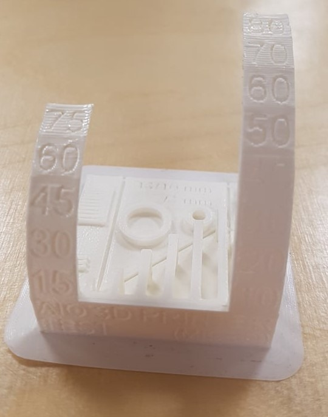
As can be seen, it would not be recommended to print something that has more that a 75° slope or things that are really close together.
for my 3D-print, I decided to do a 3D figurine of a Halloween devil because why not. I first started to do a platform for the figurine and then rounded the edges so that it would look nicer using the filet function.
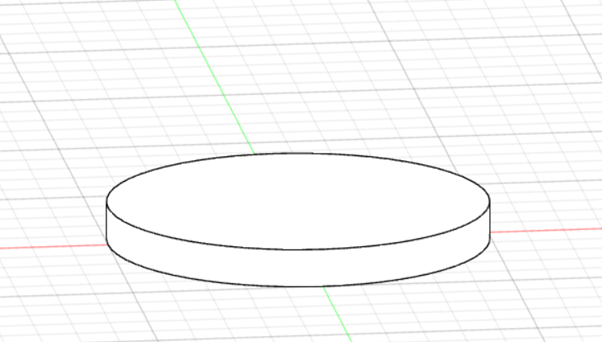
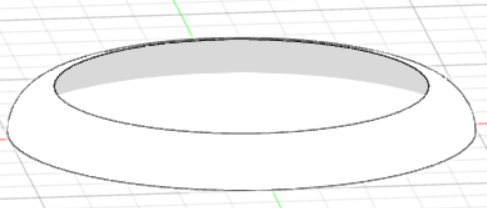
Next up was creating a sphere for the figurine’s face, I then used the shell function to make my sphere hollow so that the weight would be less. After the sketch for the face was done, by using extrude, I have made the face on my sphere.
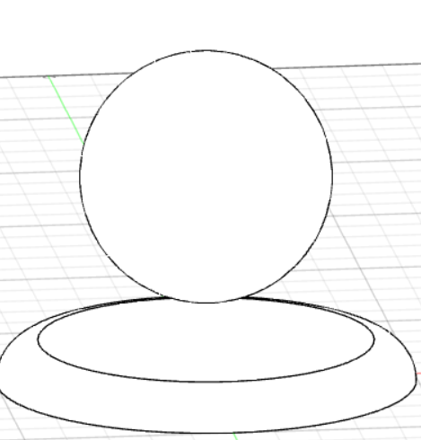
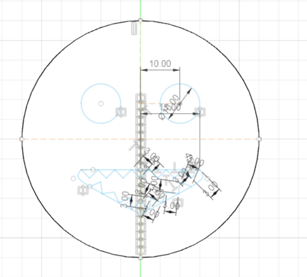
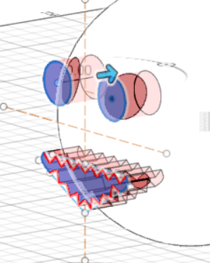
Making the horns was the trickiest thing but after some research I figured out that by using the loft function it wasn’t as hard as I thougt
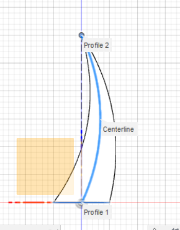
After combining my sphere, stand and horns it was time to make my preparations in ultimate cura.
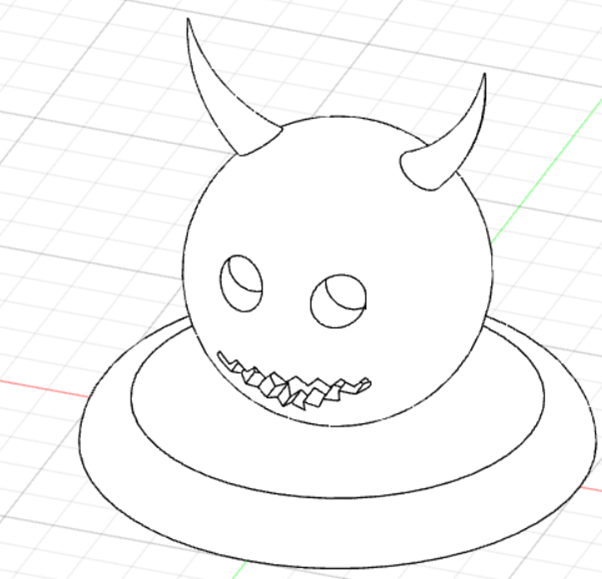
By going to file and selecting 3D print and selecting my output as Cura my model was sent into Ultimake Cura and there I could make changes to make everything ready for 3D Printing. As you can see the total time for the printing is about 5 hours and the total weight is around 62g so everything looked nice and was ready.
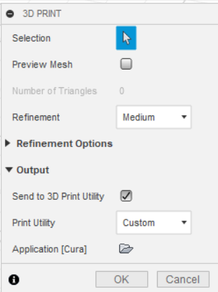
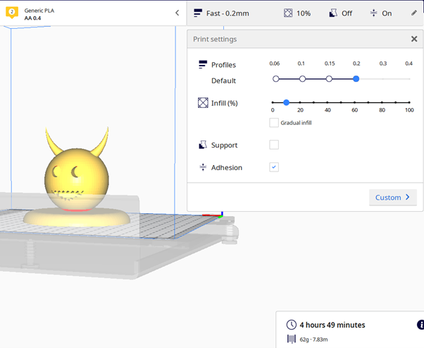
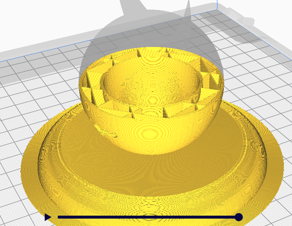
My instructor helped me on how to start the 3D print so everything went smoothly in that regard and I am happy with my final result.
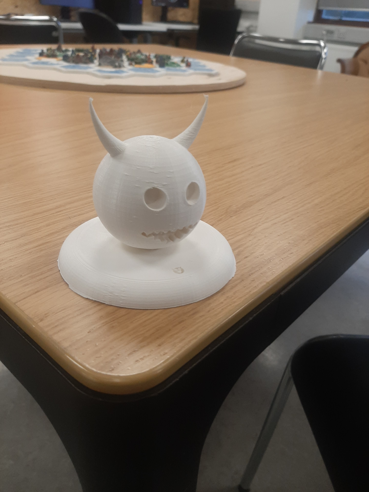
3D-SCAN
For this part of the assignment all I needed was my phone and the program 3D zephyr. I took some pictures of “AB-mjólk” on my phone, transferred them via google drive to my computer. After importing the images I selected the settings in the picture below.
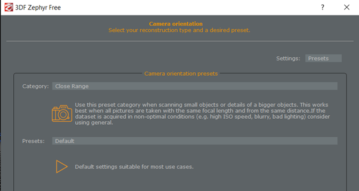
After the pictures were done rendering I had a new sparse point cloud which I then would further render into a new dense point cloud
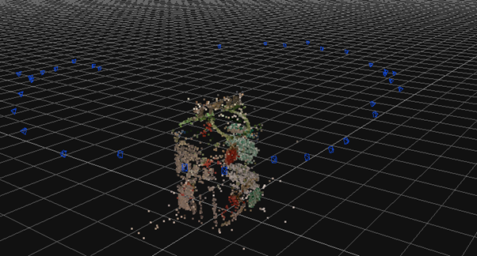
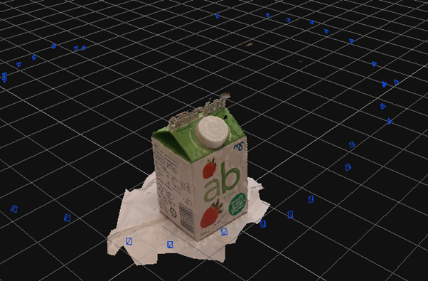
Now my 3D scan is completed and you can see in the video below transition of the 3d scanned thing.
In the link below you can access the design files of this project.
Design files
Timetable
| name | Description | hour |
|---|---|---|
| Constrains | Determining the constrains of the 3D printer | 1,5 hours |
| Research | Research about diffrenet things to create | 2 hours |
| Fusion 360 | Drawing, extruding, refineing and redrawing in Fusion 360 | 4 hours |
| ultimake cura | finetuning for the printer | 0.5 hours |
| 3D-printing | 3D-printing my thing | 5 housr |
| pictures for 3D-scannig | taking pictures, transfering them and importing into 3D zephyr | 0.5 hours |
| 3D zephyr | creating meshes and overall scanning the thing | 2 hours |
| Documentation | Setting up the documentation for this assignment in brackets | 1.5 hours |
| Total hours | 17 hours |